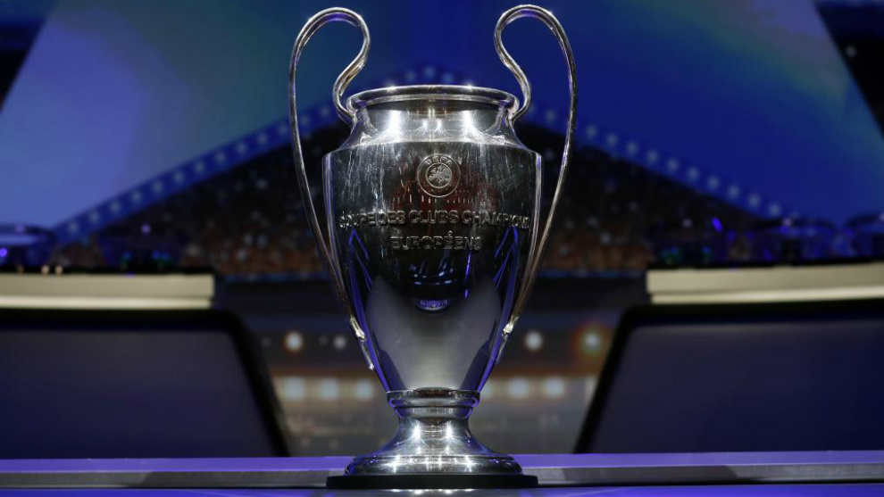

A Liga dos Campeões da UEFA (em inglês: UEFA Champions League) é uma competição anual de clubes de futebol a nível continental, organizada pela União das Associações Europeias de Futebol (UEFA) e disputada por clubes europeus. É um dos torneios mais prestigiados do mundo e a competição de clubes mais prestigiada no futebol europeu, disputada pelas equipas mais bem classificadas nos respectivos campeonato nacionais na época anterior, sendo o número de vagas atribuídos consoante o ranking da UEFA. A final da Liga dos Campeões da UEFA é o evento esportivo anual mais visto em todo o mundo. A final da edição de 2012–13 teve o maior número de audiência até o momento, atraindo 360 milhões de telespectadores.
Introduzida em 1992, a competição é a sucessora da Taça dos Clubes Campeões Europeus (português europeu) ou Copa dos Clubes Campeões Europeus (português brasileiro), que havia sido disputada desde 1955, acrescentando uma fase de grupos à competição, permitindo a participação vários participantes de diversos países A edição de 1992–93 foi inicialmente um torneio que havia apenas grupos, aberto apenas ao clube campeão de cada país. Durante a década de 1990, o formato foi expandido, incorporando uma fase pré qualificatória para incluir clubes que terminaram vice-campeão dos seus campeonatos nacionais. Embora a maioria dos campeonatos nacionais da Europa apenas o campeão nacional possa participar, os campeonatos nacionais mais fortes oferecem quatro vagas para a competição e fornece até cinco vagas desde a temporada 2015–16. Os clubes que não se qualificam para a Liga dos Campeões, podem ser elegíveis para a Liga Europa da UEFA.
No seu formato atual, a Liga dos Campeões começa em meados de julho com três rodadas de qualificação e uma rodada de play-off. As dez equipes sobreviventes entram na fase de grupos, juntando outras 22 equipes previamente qualificadas. As 32 equipes são colocadas em oito grupos de quatro equipes e jogam em um sistema ida e volta. As oito equipes que ficarem na primeira colocação em cada grupo e as oito que ficarem na segunda colocação de cada grupo, avançam para a fase eliminatória que culmina com a partida final em maio. O vencedor da Liga dos Campeões se qualifica para a Supercopa da UEFA e para a Copa do Mundo de Clubes da FIFA.